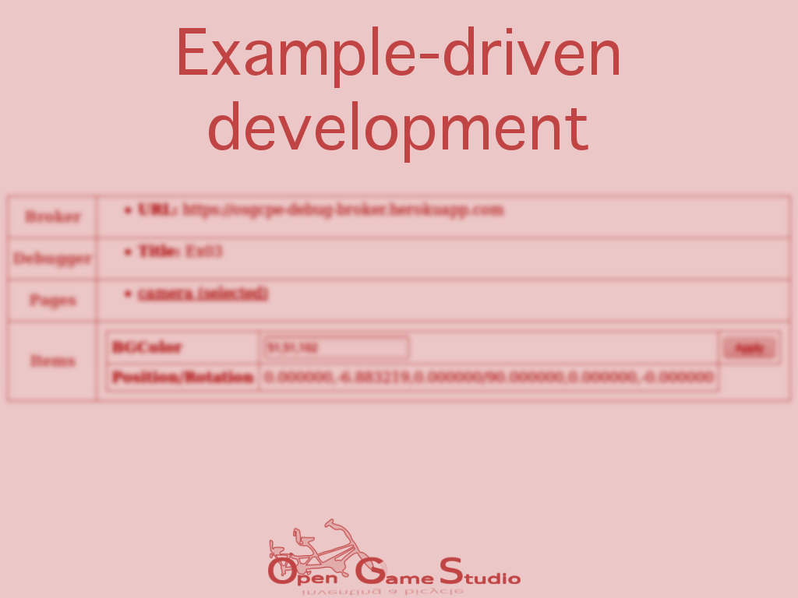

2018-06-27 00:00

This article explains how the third OpenSceneGraph cross-platform example opened our eyes to example-driven development.
2018-08 EDIT: the third example has been renamed to the fourth one due to the reasons described in the next article.
The third OpenSceneGraph cross-platform example
The third OpenSceneGraph cross-platform example explains how to implement remote debugging across platforms. This example is less about OpenSceneGraph and more about different platforms.
Remote anything nowadays assumes the use of HTTP(s) over TCP/IP. Thus, the first idea was to embed HTTP server into an application and let HTTP clients interact with the server.
However, serving HTTP across all platforms is complicated:
That's why we decided to create a mediator between debugged application and UI. Debug broker, a small Node.js application, became that mediator. Debug broker uses no external dependencies, so it's easy to run virtually anywhere. Also, since debug broker is a server application, you can configure it once and use it for any number of applications.
Both debug UI and debug broker use JavaScript because we wanted these tools to be accessible from anywhere with no prior installation. This decision limited us to web browser solution. Providing any sort of desktop application would incur additional installation and maintenance effort, which would only complicate the tools.
Example-driven development establishment
Once the third example was implemented, we realized how important and beneficial it is to develop new features outside the main project:
When we publicly share our knowledge:
From now on, all new features like input handling, Mahjong layout loading, resource caching, etc. are going to be first implemented as examples. We call this example-driven development.
That's it for explaining how the third OpenSceneGraph cross-platform example opened our eyes to example-driven development.